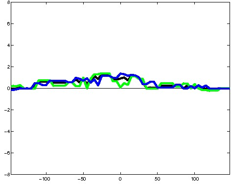
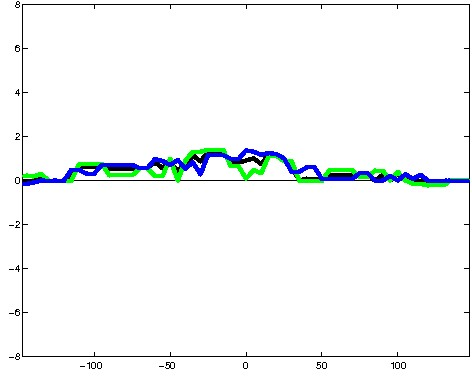
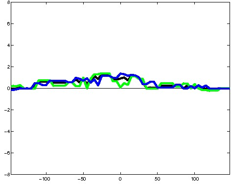

K562 Activating DNase matched - State 10:DNaseD (n=7)
K562 Activating DNase matched - State 10:DNaseD (n=7)
[
See group descriptions
]

; picked in K562 (state 10:DNaseD, DNase); matched; chr4:7,541,469-7,541,763 (295bp)")
; picked in K562 (state 10:DNaseD, DNase); matched; chr15:53,495,689-53,495,983 (295bp)")
; picked in K562 (state 10:DNaseD, DNase); matched; chr9:133,377,049-133,377,343 (295bp)") 
